OUM |
Siebel Customer Relationship Management (CRM) Supplemental Guide |
||
Method Navigation |
Current Page Navigation |
||
|
|
||||||||
This document contains OUM supplemental task guidance for Siebel CRM implementation projects.
The task guidelines in this document should be used to supplement the guidelines that appear in the OUM Task Overview and the Application Implementation Supplemental Guide.
The following templates and tools specific for Siebel implementations are available to assist with this task:
Template File Name |
Comments |
|---|---|
| MS EXCEL |
It is very important that this task is completed as it outlines the objectives for any Siebel implementation project. Upon completion of this task you should have a document listing all of the business and system objectives that the enterprise has identified to for the project so that they can be reviewed at various stages throughout the implementation. Ensure that each objective is numbered so that they can be easily be cross-referenced in other project documentation (i.e., the MoSCoW List). Also, the objectives should be placed into sensible groups to help locate the information at a later stage.
As a solution-driven approach, you generally review the documented business case and business benefits associated with the selected Siebel solution with the project stakeholders to confirm that they are the desired business benefits and determine how these objectives will be measured. The objectives should be related to the benefits offered by the solution. In the case of Siebel On Premises, the high-level benefits are increased customer satisfaction, gains in operational efficiency, and improved channel collaboration:
| Gain | Accomplish |
|---|---|
| Strategic sales, service, call center, marketing, loyalty, partner management, customer order management and customer mastering capabilities |
|
When defining your business objectives, consider the following best-practice guidelines:
Establish a clear vision for your Siebel implementation in relation to business drivers:
Your organization’s vision for the implementation should address how using Siebel applications supports ongoing organizational goals. When establishing your vision, consider these questions:
The vision of your Siebel implementation is highly dependent on the business painpoints, challenges, hurdles, and issues you are trying to address. The following are a few examples of what may be driving your need to implement Siebel applications:
Example:
A medical instrument company rolled out a Siebel eBusiness solution to its sales representatives. The company defined a vision that was easy to understand and easy to articulate - to retain and acquire more customers. To achieve this vision, the company used the Siebel application to consolidate global call centers so that all used standardized and consistent processes for call handling, complaint investigations, and complaint reporting. Because of the clear vision established from the beginning, the many levels of the organization were aware of the “why” for the Siebel implementation and understood and supported the solution.
Make sure that Business Objectives are measurable:
Review your vision for the Siebel implementation, then think about what you want your business to accomplish with your Siebel implementation. Do you want to increase revenue? Do you want to improve customer retention rates? The answers to these questions become the basis for your business objectives. Refer back to the selection process for your Siebel application, what were the ROI (return on investment) targets? For example, do you want to decrease costs, or increase productivity?
Make sure that your business objectives are specific and measurable such as “Reduce technical support response times by 20 percent” rather than “Improve technical support.”
Make sure that you set realistic objectives. Your objectives need to be achievable so that your users will buy into achieving them. If you set the bar too high, no one will want to strive toward the objective.
Consider creating a hierarchy of business objectives, organized by business unit. This allows each business unit to establish how it will achieve its measurable business goals—which are linked to the overall business objectives. This way each business unit owns a part of the success of your implementation.
It is also important to make your objective time-bound. This helps you to define realistic objectives that lead to results. Clear, time-bound objectives make it easier to build upon successes in each phase of your implementation. Achieving results bolsters confidence in your system and adds to a rapid receipt of ROI.
Examples:
| Business Objectives | Non Business Objectives |
|---|---|
|
|
Define metrics for measuring against a baseline:
To get to your desired end-state, you need to determine and track specific metrics to gauge your progress towards meeting your business objectives. If you take a snap-shot view of how successful your implementation has been only at the end, you may risk being displeased with the results.
For example, you are deploying Siebel Sales and one of your business objectives is to increase the sales close rate by 15% in 12 months. In order to measure post rollout improvement, you need to establish a baseline of accurate close rates for your current (pre-implementation) sales process.
Careful definition of metrics and accurate baselining before rollout is critical for measuring the effectiveness of your implementation. There are other metrics that you need to measure as part your implementation, such as metrics that measure user adoption and metrics that measure leading indicators to give you early warning of potential problems.
The actual metrics most applicable to your business situation depends on your unique business objectives. However, the following table lists some revenue and cost-related metrics tracked by various types of world-class organizations:
| Metrics | Marketing | Sales | Call Center and Field Service |
|---|---|---|---|
Revenue |
|
|
|
Costs |
|
|
|
Once you have determined what your metrics are, you need to baseline them. Many companies invest millions of dollars in state-of-the-art technology and rightfully expect high results. After rollout, however, these same companies, when probed to show exactly which parts of their operations have improved and by how much, struggle to deliver the numbers. This problem that can be avoided by gathering baseline data prior to the implementation, getting executives to agree on the current state, and then using the baseline to measure future performance and improvement. Consider the following examples, in which companies established a baseline and measured improvement against it:
Communicate the Vision and Business Objectives:
Once you have established your vision and business objectives, you must communicate them throughout your company. Don’t keep your vision and objectives secret or confined to executives and IT professionals; this creates a disconnect with the groups who are to support the implementation. Once you have established your vision and business objectives, share that vision broadly. When communicating your message consider the different reasons why those in your organization need to understand the vision and business objectives:
Lack of clarity in your vision statement can lead to user confusion. For example, one company issued a vision statement to “Improve the ability of our call centers to operate at a lower cost.” The users interpreted this to mean “we are making significant job cuts” and went on strike. The reality was that the company had no intention of reducing the workforce. It wanted to increase call center efficiency to keep up with increasing call volumes. To achieve the desired results for your Siebel solution, you need to have everyone focused on and supportive of the objectives. Workshops can be used as forums where the implementation vision is communicated to frontline managers. Workshop participants get the same information at the same time, and feedback is encouraged. Workshops can also help the organization identify areas of resistance and can be used deliver a consistent and positive message. Newsletters, email announcements, and intranet articles are good methods to broadcast the vision and objectives to the entire user base, as illustrated in the following example.
Example:
The CEO of a software company succinctly defined the company’s vision for its Siebel application and communicated its vision to employees by email. In the email, the CEO explained why the Siebel application was chosen and what the company expected to achieve from the implementation. The email assured employees that the CEO supported the initiative, was involved in the project, and would expect results from each employee during the rollout of the Siebel application. The CEO’s first email was the launch of the communication strategy; it detailed the expected ways the organization would receive communication and provided a forum for feedback. This email was the first of many updates sent to the organization’s employees to inform them about project progress and future plans. As important as communicating the message is encouraging two-way communication. After the initial email announcement was sent, the company set up an intranet site where employees were able to ask questions and post feedback, anonymously if they wished. The company committed to answer any questions within two days of posting.
The Business and System Objectives work product describes and prioritizes the objectives as it is indicated in OUM Task Overview but should also indicate for each objective:
A number of example objectives are identified bellow:
Include in this work product also the related metrics, the related processes and sub-processes associated to each metric, numbering each metric and process as they will be cross referenced within further documentation. Examples of several metrics for one same objective:
The diagram of the main Siebel application functions, in the context of the entire system, is often contained in the consumer edition of the Application Guide for the corresponding Siebel application. This diagram can be used as a base to be adapted to the customer systems using MS VISIO.
The following image shows an example of a system context diagram for a Siebel implementation (Communications Billing Manager):
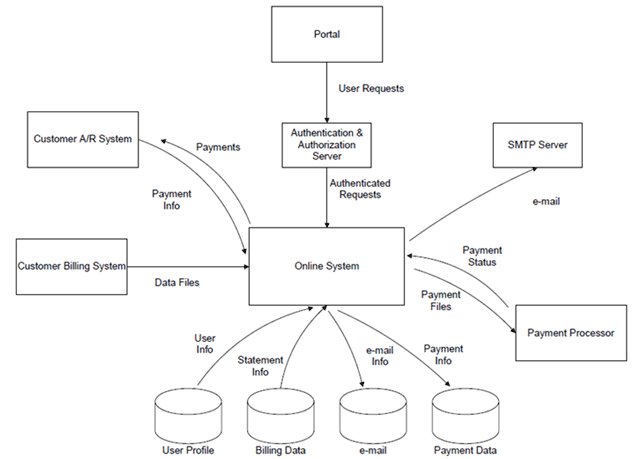
A business process model depicts the flow of work typically followed by users or systems to complete a sequence of tasks. Models can map business processes at multiple levels. Siebel implementations use four levels of detail:
Solution Map
A solution map provides high-level business process models categorized by the business objectives of the organization. A solution map includes the process domains in which tasks are executed to meet these objectives. For example, a solution map for the enterprise domains of CRM, Employee Management, and Partner Management shows process domains including Marketing, Sales, and Service. In turn, the Marketing process domain shows functional domains that include Campaign Management, Event Management, and Needs Analysis. A business analyst or manager can review the solution map to make sure that the way a task, such as campaign management is performed supports the organization’s high-level business objective for marketing activities.
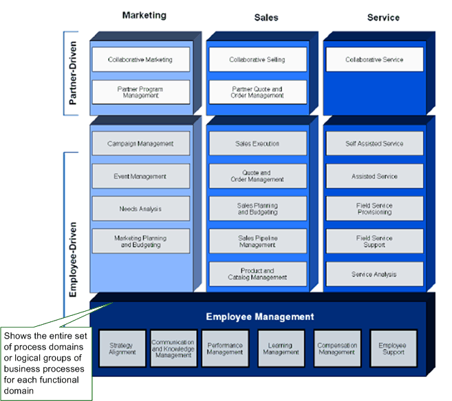
Process Relationship Diagram
The next level of process model, the process relationship diagram, represents more detailed business processes for one functional domain, e.g., Service and how it relates to other domains such as Sales. A process relationship diagram shows one functional domain, such as Sales, in detail on one page. Process relationship diagrams show the process domains within the functional domain. The process relationship diagrams also show how the business processes within a number of process domains relate to one another.
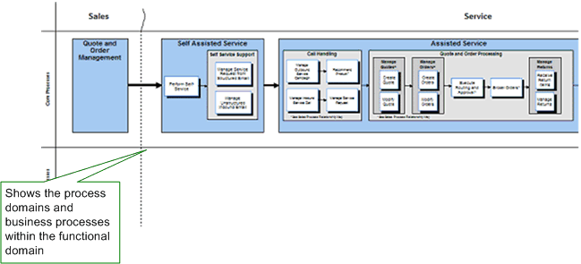
Business Process Diagram
The third level of detail, the business process diagram, shows the actual sequence of steps involved in a task referred to in a process relationship diagram. Within the Call Handling section of the process diagram there is a business process called, Manage Service Request. This process is show in the screen shot above. This level of diagram maps strategic processes, indicating interactions between users in your company and the end customer, as well as partners and external companies. This level contains steps and subprocesses, as well as clearly defined inputs and outputs.
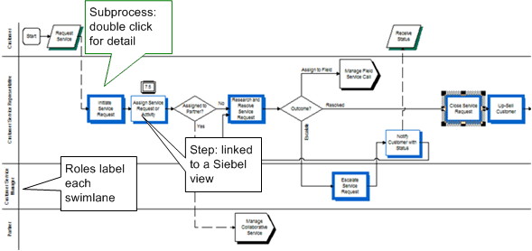
Subprocess Diagram
You can apply even more detailed business process models, such as closing a service request. These processes are represented with subprocess diagrams. This diagram shows a series of steps, typically executed by one person that can be used in multiple business processes. Subprocess diagrams allow the detail of common work sequences to be summarized at the business process diagram level, so as not to detract from understanding of the overall function of the business process. Subprocesses detail the steps supported by the Siebel application, Universal Application Network (UAN), Business Integration Processes, and external applications.
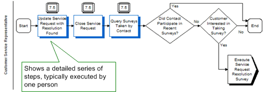
Oracle has codified both the functionality for common best practices for sales, marketing, and service processes and industry-specific best practices into our applications. In order to create or modify process solutions, business process modeling terminology must be reviewed. The table below summarizes some key modeling terminology.
| Term | Definition |
|---|---|
Functional Domain |
A typical business unit within a company, such as sales, service or marketing |
Process Domain |
A logical grouping of processes, such as Sales Execution and Pricing Management, in a Functional Domain |
Sub Domain |
A subset of related processes in a Process Domain |
Business Process |
A sequence of steps and subprocesses performed to achieve a major business objective |
Subprocess |
A sequence of steps completed by an individual in one work session |
Step |
A single activity performed by an individual in executing a process |
Business Integration Process |
A built-in integration between a Siebel application and another enterprise-class application |
As described in the OUM Overview for this task, if pre-defined process models/business flows exist for the functionality being implemented, they should be used as a starting point for preparation of this task's work product. Whenever possible, adapt existing standard models to the future business processes rather than creating business process models from scratch.
You can find Siebel-specific business process models, from an integration perspective, within the Oracle Business Process Architect Suite. This tool includes Oracle's conceptual business process models which were created by examining a variety of sources and combining them into a comprehensive set of best-practice business process definitions. Oracle E-Business Suite, PeopleSoft, JD Edwards, and Siebel business process definitions were combined into a superset of process information. The superset was then rationalized and compared to external authoritative and guiding sources for clarity and completeness. This superset is continually being updated and improved by knowledge gained with Oracle acquisitions and industry expertise.
There are four levels of models, L0-L3. L0-L2 models are high level conceptual models which can be used for Siebel applications implementations, whereas L3 models portray the process from a technical integration perspective not specified for Siebel.
You can find more information about the Delivered Reference Process Models (note 824633.1) available on My Oracle Support.
Measurement guidelines need to be identified to perform the analysis in at least the following areas:
A formal KPI program can assist a company in measuring its progress and reinforce necessary change:
Typical KPIs include resource utilization (CPU, memory) of any server component, uptime, response time, transaction throughput, and reliability of your Siebel application while it is under a load of multiple users.
The Siebel system has been tested locally at all sites. Whenever you first log onto the system or first enter a tab, the performance is slower than when you subsequently work with that tab. This is because Siebel caches data to ensure that frequently used views remain in memory. The table below details typical timings to be expected doing different things in the system.
| Task or Activity | Initial | Subsequent |
|---|---|---|
Starting up Siebel (getting to login screen) |
1-2 seconds | 1-2 seconds |
Logging in to Siebel (getting to the home page) |
5-15 seconds | 5-15 seconds |
Clicking on any top tab (except Contact Summary) |
2-5 seconds | 1-2 seconds |
Clicking on Contact Summary (this contains 8 views and connects to the CDB to retrieve data) |
7-12 seconds | 5-7 seconds |
Running pre-defined queries (searching through and/or retrieving small data sets) |
3-12 seconds | 2-6 seconds |
Running pre-defined queries (searching through and/or retrieving medium data sets) |
20 seconds -1 minute | 15-30 seconds |
Running pre-defined queries (searching through and/or retrieving large data sets on complex search criteria) |
Up to 10 minutes | Up to 10 minutes |
In-line queries (searching through and/or retrieving small data sets) |
2-5 seconds | 2-5 seconds |
In-line queries (searching through and/or retrieving medium data sets) |
2-20 seconds | 2-20 seconds |
In-line queries (searching through and/or retrieving large data sets) |
Up to 1 minute | Up to 1 minute |
Send an email |
Up to 1 minute | Up to 1 minute |
Creating correspondence |
Up to 1 minute | Up to 1 minute |
Creating a report |
Up to 1 minute | Up to 1 minute |
Logging out of the system (Control+Shift+x) |
2-5 seconds | N/A |
It is possible that the performance experienced will change as more users come onto the system. This will be actively monitored so that remedial action can be taken. It is not possible to test every possible way of querying data in the system. As a result, it is possible that a particular query you create or run does not perform well.
Please report any instances of this, with as much detail as possible (e.g., the type of query you were running, the query parameters you were using), to your local help desk. Before you do so, please consider the quantity of data your query may searching through or returning. If either of these is relatively large, the query may take some time to execute.
Performance of email, correspondence, and report generation will depend upon the amount of data being generated. Note that large reports may time out and can be viewed in the Reports Server later.
This task is highly recommended for all Siebel projects. It is essential that a project glossary be developed as it avoids misinterpretation of Siebel and business terms.
Refer to the Siebel CRM Definitions and Terms within OUM for a high-level Siebel glossary and the corresponding bookshelf for more specific terms.
This task has more than one iteration for Siebel projects:
The primary objective of this version is to establish a base understanding of the major business objects in the system. When creating this iteration of the model, the modeler is not concerned with object attributes, object operations, finding aggregations, or developing the inheritance hierarchy. However, it is useful to establish the association(s) between the major business objects, name the associations, and select their multiplicity.
Example:
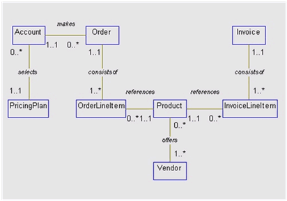
This version of the class diagram builds on the foundation established by the conceptual object model, and fills in many details, such as attributes and more refined associations such as aggregations. It also begins to consider the inheritance hierarchy. Depending on the style adopted by the modelers and the size of the application, it may take a number of iterations to refine the class diagram to the level of detail shown. As the design proceeds and other deliverables such as sequence, collaboration, and state diagrams are developed, the class diagram will be further refined.
Example:
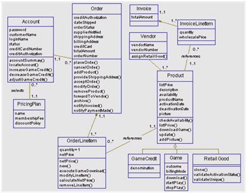
Updates to the behavioral model must be reflected in the structural model. This class diagram shows the new or updated classes, attributes, operations, and relationships implied by the updated behavioral model. Notice that the class diagram contains classes from other layers of the application such as the user interface and the database or storage layer, as well as a controller class. (A complete listing of classes would include all classes from each layer, for instance, all of the user interface classes, all classes encapsulating business logic not in the business classes, and so forth).
Example:
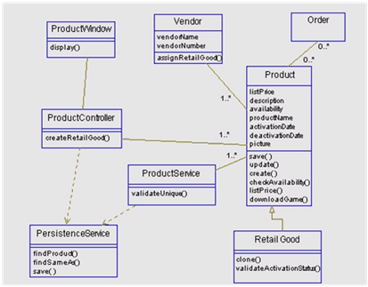
Where the characteristics of a project support or require it, the RD.140 Requirements Specification may be used to consolidate a number of requirements-related work products. The Requirements Specification may contain both functional and supplemental requirements, forming a single requirements document for review and approval.
Functional requirements capture user or stakeholder requirements that describe tasks the users (actors) must be able to accomplish with the system in order to achieve stated Business Objectives; often referred to as a “wish List” of what users expect or desire of the system.
These requirements should be communicated and documented in user terms and language, and be void of technical terminology or jargon. Each requirement should describe a single desired result. As a result, conjunctions such as “and” “or”, “with”, and “also” should not be used in defining the requirement. Furthermore, each requirement should detail the following four items:
All user requirements should be associated/mapped to at least one role. This paradigm typically makes the sentence structure of the requirement statement “verb/noun”. Also, the requirements are generally listed as “ability” statements starting with “Ability to …” and should be concisely stated within 7-15 words. An example of a stakeholder requirement is, “ability to view customer list by account number”.
Additionally, functional requirements define the functionality the configuration team must build, or ensure exists, in the product that will enable users to accomplish their tasks, thereby satisfying the user requirements. These requirements provide the foundation upon which test cases are developed. They are generally stated as “shall” statements starting with “System shall…: For example, “System shall provide the ability to query for customer information by account number”.
Business Rule requirements can also be included as part of the functional requirements, as extension of these. They provide detail relative to the operating principles about the system, such as who can take what action and under what circumstances. Quite often, they will lead functional requirements that enforce them and thereby be mapped as such. An example of a business rule is: “only directors can approve projects greater than $500,000”.
On the other hand, as part of the non functional requirements, it is very important in a Siebel implementation to gather the interface requirements used to capture the specific ones that are associated with integrating Siebel applications with other systems. These requirements should detail the following values:
There are many other areas or types of non functional requirements involved in a Siebel implementation. Non functional requirements are generally stated as “shall” statements starting with “System shall…”
As described in the baseline Overview for this OUM task,“At a minimum, use case models should be developed for those requirements that can only be satisfied through custom-built components, which extend the functionality of the COTS system and/or integrate the COTS system with other COTS or legacy systems. Development of a Use Case Model for all other business requirements is considered best practice, as they contribute to a better understanding of requirements and can be leveraged to prepare a number of other required work products downstream, such as test scenarios and business procedures documentation.”
In Siebel implementations, it may also be advisable to create a use case model for requirements satisfied by Out-of-the-Box (OOTB), standard functionality. The consumer edition of the Application Guide for the corresponding Siebel application contains the Catalog of Applications. This is a diagram showing how the use cases relate back to the overall application logic and navigation. This diagram can be used in the case where use cases are developed for all requirements. They can also be used as a base to be adapted to the specific requirements of the project.
Example:
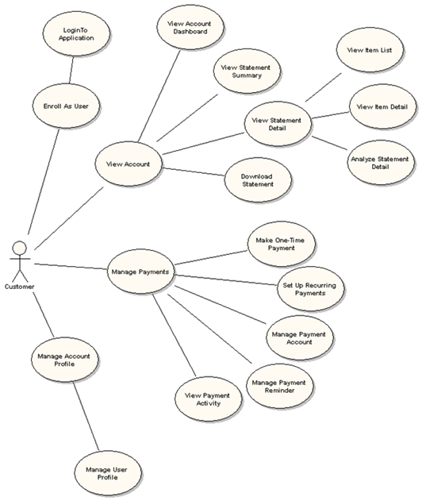
A list of the web flows that specify the functionality and site navigation of the application and the use cases covering all the OOTB requirements is also included in the consumer edition of the Application Guide including screen shots of the navigation.
Example - Authentication Use Case:
The authentication use case covers the business requirements for allowing customers to access the system. This use case allows consumers to login to the application and access the system as an authenticated user.
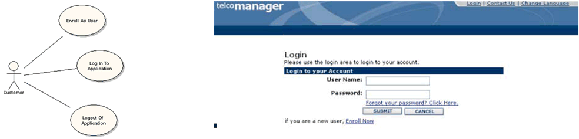
| Detail | Description |
|---|---|
Name: |
Login to application. |
Brief Description: |
Consumer user logs into the application. |
Primary Actor: |
Consumer user |
Main Path: |
|
Alternate Paths: |
3a) User has forgotten their password and selects the Forgot Password operation:
3b) User has not enrolled and selects the Enroll Now operation:
5a) System determines that customer credentials are invalid:
|
Standard Features: |
|
Configuration Points: |
This framework for user management may be configured via a plug-in to use available systems for authentication and other user information. |
Notes: |
|
There are several things to keep in mind when using use cases with a packaged application like Siebel. Under most circumstances, use case methodologies suggest that the business requirements be completely separated from the GUI design. Furthermore, the UML-defined efforts surrounding the completion of Use Cases and particularly the steps for design and development almost always assume the system is being built from a blank slate. When managing use cases for packaged applications, there are some very important considerations. Most importantly, we can assume that packaged applications have already been built, and they are being customized or configured by an implementation team:
Those facilitating requirements will constantly iterate through understanding how the enterprise’s current terminology, process, or application maps to Siebel.
The application already has names for things – in discussing the application with business users, it will be important to explain the key terminology used within the application and begin to align those pre-defined items with the terms the business uses. For Siebel applications, this could be terminology from a business process, user action on an item, functional area, GUI element, etc.
When capturing use cases, those responsible for capturing use cases should be careful to introduce terms appropriately to allow the user to define their goals in their own terms while still matching the user’s terms to Siebel terms. Users that are familiar with Siebel will be more likely to describe their goals in Siebel terminology. As well, the use case and requirements document templates should take terminology into account.
Here are additional things that can be derived or included in this work product for each use case:
Example of Use Case - Creating an account record
This example shows how a use case might be defined in the Use Case Specification work product template.
Context of Use
As a central object for managing customer relationships, an account record must be created for each prospective or customer account before other supporting information can be entered about the account. When the account record is created, the agent can begin to add and track important details such as contacts, opportunities, and service requests.
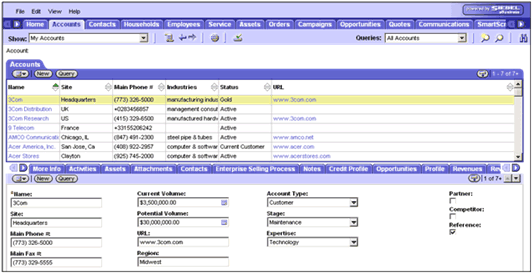
Main Success Scenario
| What the Actor Does | What the System Does | ||
|---|---|---|---|
1. The user navigates to the Accounts screen. |
|
||
2. The user clicks the Show drop-down arrow and selects My Accounts. |
|||
3. The user clicks in the Accounts list. |
4. The system displays New Account mode. | ||
5. The user completes the following required fields: Note: Click to expand the form and view all available account fields. |
|||
|
Field | Description | |
| Name | Type the business name of the customer account using title case, for example, Fred Smith Pty. Ltd. | ||
| Site | If an account has multiple locations, the Site field can be used to determine a more specific location. | ||
| Main Phone # | Type the account's central phone number, including the area code, with no spaces. The phone number is automatically formatted in (AAA) NNN NNNN format. | ||
| Main Fax # | Type the account's main fax number, including the area code, with no spaces. The phone number is automatically formatted in (AAA) NNN NNNN format. | ||
| Current Volume | Click and use , and to select Currency Code, Exchange Date and Amount for the current volume of business with this account. | ||
| Potential Volume | Click and use , and to select Currency Code, Exchange Date and Amount for the potential volume of business with this account. | ||
| URL | Type the full web address of any web site maintained by the account, for example, www.geoffreysteel.com. | ||
| Region | Type the name of the region, for example, Midwest. | ||
| Account Type | Select the account type that best describes the relationship between the account and company, for example, Prospect, Consultant. | ||
| Stage | Click to select the stage of the account, for example, Rollout. | ||
| Expertise | Click to select the expertise of the account, for example, Technology. | ||
| Partner | Click to indicate this account is a partner. | ||
| Competitor | Click to indicate this account is a competitor. | ||
| Reference | Click to indicate this account as a reference. | ||
As this task is oriented to Financials applications most of the content described in the OUM Task Overview is not applicable to Siebel implementations, so, this activity is not generally executed in a Siebel CRM implementation.
Although substantial information regarding the proposed solution should be available from earlier documentation, it will still be necessary to understand in significant detail the purchased functionality set of the customer's configuration so a thorough and informative gap analysis can be completed. As a result, if the purchased modules have not been loaded on a machine through which the functionality can be verified, this activity should be completed now.
The business analyst must understand the purchased Siebel functionality before conducting discussions with the enterprise's SMEs and end users regarding solution options. This is necessary to help understand which features and functionality will be implemented, to identify potential gaps, and to suggest alternate solutions.
Once the business analysts (and other members of the project team) understand the purchased functionality, they will be in a better position users to modify business processes, rather than modifying the Siebel application. Minimizing modifications will help to hold down configuration costs and increase the ROI.
The purpose of the mapping work is to map every requirement to the purchased Siebel functionality and identify potential gaps. The following steps should be followed:
The following templates and tools specific for Siebel implementations are available to assist with this task:
Template File Name |
Comments |
|---|---|
| MS EXCEL |
Once your Siebel products are successfully installed, you need to perform a number of tasks to set up and administer the application. Initial setup tasks are those which must be completed in order for your Siebel applications to work correctly, but are then revisited infrequently, for instance, as your company grows. Ongoing tasks are done on a more frequent or ongoing basis. Both types of tasks may be accomplished by following the Application Administration Guide.
Determine access control strategy and define business environment structure:
Siebel applications can be set up to support many strategies for your company to control access to views and data. These strategies include methods such as defining your business environment structure (organizations, internal and external divisions, and so on), defining employee positions, and creating access groups so that specific groups of people have access to specific views and data. These decisions should be made early in the deployment process, so that the strategy can be implemented during the initial setup. For more information about controlling access to views and data, and the procedures for implementing access control, see the Security Guide for Siebel Business Applications.
Enter employee records into system (database and application) and determine employee access to views and data:
Enter employee records after you have defined your business environment structure. You need to assign at least one responsibility to each employee, and you may also assign organizations, positions, or other access control parameters. For more information about entering or deactivating employee records, see the Security Guide for Siebel Business Applications.
These tasks set up defaults that are used throughout your Siebel application as system preferences, predefined queries, currencies, currency conversion, expense types, payment terms, periods, telephone formats, pager companies, date formats, ZIP Codes, global time zone support, email, fax, mail accounts, industries, languages, case sensitivity, web browser capabilities, additional web browsers, quick fill templates, default view links for screen home pages, etc.
For some implementations, the default settings provided through the seed data meet a company’s needs without customization. In other cases, administrators find it useful to make adjustments to these defaults.
The following templates and tools specific for Siebel implementations are available to assist with this task:
Template File Name |
Comments |
|---|---|
| MS WORD | |
| MS EXCEL |
Once gaps have been determined to exist, the complexity and level of each gap needs to be assessed. This portion of Gap Analysis work is completed in user review sessions.
There are different types of gaps identified in the spreadsheet tool below that will directly affect the score of the gap complexity.
Once the type of gap has been identified, the gap will need to be quantified with a score based on a rating scale ranging between 1 and 5. A level 1 indication describes an "out-of-the-box" feature or very little customization while a level 5 indicates a very complex customization.
To improve the accuracy of the work effort estimates, separate gap ratings are provided for each of the five major categories of customization. Thus, a single requirement may have more than one gap rating.
The following templates and tools specific for Siebel implementations are available to assist with this task:
Template File Name |
Comments |
|---|---|
| MS EXCEL |
Where the characteristics of a project support it, the AN.100 Prepare Analysis Specification may be used to consolidate a number of Analysis work products. The Analysis Specification can be used to create a single document that describes the overall functionality that must be provided by an extension or customization.
Check the Expert Services Development Guidelines and Configuration Concepts document to ensure that any configurations you perform:
Some of these guidelines and concepts are related to:
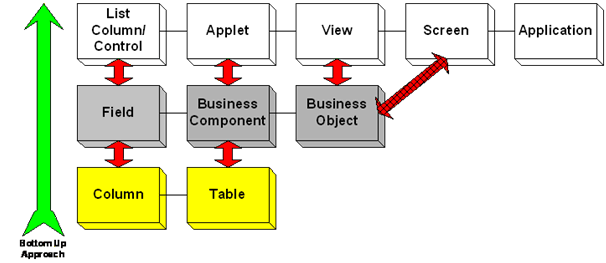
Use the following naming conventions for Siebel configurations:
| Object | Convention |
|---|---|
Any |
For any new object that you create (top-level or child), prefix the name with the company name (or an abbreviation of it). For example, if you are creating a new Hobby business component for ABC Corporation, name it ABC Hobby. Similarly, if you are creating a new ‘Description’ field in the standard Account business component, name it ABC Description. Another approach to consider would be to put the three-letter acronym at the end of the name, instead of at the beginning. This convention will allow you to search for custom objects by acronym but still see related objects sorted together, such as Approval Authority and Approval Authority Code - XYZ The only exception to this standard is that if you are adding a new child object to a parent object that is already prefixed, there is no need to prefix it again at the child level. For example, if you are adding a Description field to the ABC Hobby business component, name it Description instead of ABC Description. |
General |
The majority of object names (except applets) should be singular, present tense nouns.
|
Links |
Adhere to the convention of <parentBusComp>/<childBusComp>. By default, the name for new links is set to this format, but it is possible to override the default name. |
Join |
When a new join is added to an existing standard business component, always give it an alias and ensure that the alias is prefixed with the company name or acronym. |
Foreign Key Fields |
Foreign key fields should have a name like <Entity> Id. If the foreign key is serving as a primary pointer, it should have a name like Primary <Entity> ID. For a primary pointer to an entity that is already prefixed, prefix the foreign key field with the company name or acronym (as usual), but do not include the prefix in the <Entity> name. For example, a primary pointer to the ABC Subsegment business component would be named ABC Primary Subsegment ID, rather than Primary ABC Subsegment Id or ABC Primary ABC Subsegment ID. |
New LOV_TYPE in List of Values |
Prefix with Company name or Acronym |
Form Applets & Profile Applets |
Titles should be singular. |
List Applets & MVG Applets |
Titles should be plural. |
Associate Applets |
Titles should be of the format Add <entities>, where <entities> is plural. |
Pick Applets |
Titles should be of the format Pick <entity>, where <entity> is singular. |
Note: Exceptions may arise if multiple variations of the same Business Component or Applet are needed. Typically, multiple variations will be necessary if a particular entity is displayed as both a top-level applet and a child applet on other views, and the two applets are not the same. In those cases, the name of the parent entity is appended to the beginning of the child applet name. For example, the ABC Account Contact List Applet is a Contact List that is displayed as the child of an Account. It needs the word Account to distinguish itself from the standard ABC Contact List Applet, which is a different applet.
The Golden Rule: Whenever in doubt regarding how to name an object, use the existing objects in the standard Siebel repository as your guide. For example, when creating a new Association applet, you would notice the <BusComp> Assoc Applet naming convention. Take the extra time to examine the standard objects and conform to their established naming conventions instead of cluttering the repository with poorly named objects.
Siebel scripting languages provide the ability to add powerful extensions to the existing declarative configuration capabilities. However, use of script may degrade maintainability, compromise upgrade options, and increase debugging time. The general rule is that all other possibilities should be exhausted before choosing a script to satisfy some functional requirement. The remainder of this section expands on that idea.
When considering the use of Siebel script languages or Object Interfaces, the following these next tenets will help you avoid writing superfluous script:
Configuration capabilities expand with each Siebel release. As a result, there are a number of ways to configure different types of functionality in Siebel Applications. Though they may not always be immediately obvious, most types of functional behavior are possible via declarative configuration.
The following table lists built-in techniques that are preferred over use of script, or other custom techniques, to fulfill functional requirements. The areas shown are the ones which are the most often erroneously implemented using script by implementers with less experienced with, and knowledge of, Siebel capabilities.
| Technology | Documentation |
|---|---|
User Properties |
Siebel Tools Reference, Volume 2, Appendix F |
Runtime Events |
Siebel Workflow Administration Guide, Chapter 4 |
Workflow |
Siebel Workflow Administration Guide |
State Model |
Siebel Workflow Administration Guide, Chapter 17 |
Visibility |
Siebel Tools Reference, Volume 1, Chapter 4 |
These technologies may be use to perform a wide variety of tasks, including simple data validation, event-driven processing, data-driven read-only behavior, interaction with external systems, security, state transitions, etc.
Using the guidelines shown above will help to enforce standards that will positively influence the two factors that have the most significant impact on application quality and costs: maintenance and upgrades. Use of standard Siebel components and declarative configuration tools decrease the time and effort required to maintain the application. Also, since Siebel Workflow, State Model, User Properties, etc., are configured using graphical UI tools, their use requires the lowest level of technical knowledge. Also, since functionality created using these built-in capabilities is stored in a single place, their use supports a more comprehensive view of the overall functionality that has been implemented. Conversely, understanding the functionality that has been implemented using scripts is much more laborious as because developers must look at each object individually and read the script code to understand what has been implemented.
Declarative functionality is upgraded automatically when the application is upgraded. Scripts are not. After an upgrade is complete, all objects that have script must be tested to ensure functionality has not been lost and all non-trivial scripts must be reviewed to ensure they are compatible with application changes. Configuration mechanisms are rarely removed from the application, and as a result the majority of standard Siebel functionality upgrades without incident. If an upgrade will affect declarative functionality, it will be documented in the version release notes.
The following templates and tools specific for Siebel implementations are available to assist with this task:
Template File Name |
Comments |
|---|---|
| MS WORD |
The Business object layer refers to the field, business component, and business object layer. The data layer refers to the columns and tables.
Fields (Business Layer) map directly to Columns (Data Layer). A Business Component (Business Layer) maps directly to a Table (Data Layer). A ruling principle explains that there is one Business Component per applet and one Business Object per view. It is important to know that each applet maps to one and only one business component. However, many different applets can be created from the same business component.
A Business Component represents a business entity within the Siebel application such as Account, Contact, and Service Request. A business component can be thought of as a virtual database table that spans multiple real tables. It organizes the data in the way the user chooses to view the data and not how it is organized for effective data storage.
A Business Object represents a collection of related business components used in a major functional area of the business. The majority of business objects have one business component that serves as the parent or driving business component.
To complete this critical portion of the Gap Analysis effort, the business analyst will work with the technical configurators to understand how fields map to columns in a table within the database. Working collaboratively with the configurator, the business analyst will designate relationships as many to one, many to many, one to many, or one to one. These parameters can be demonstrated as M:1, M:M, 1:M, or 1:1.
It is important to keep the following parameters in mind when completing this portion of the Gap Analysis:
The mapping exercise will reinforce the ER Diagram explaining the 1:1, 1:M, M:1, M:M relationships. Although the Solution Design is not the Business Analyst's deliverable, it is important that the business analyst understand the layer structure so the architect and configurators will be better prepared for the upcoming solution design effort.
The business analyst works closely with the technical configurators in defining the ER diagram. The diagram represents the relationship between the different entities or modules the customer has purchased.
The following templates and tools specific for Siebel implementations are available to assist with this task:
Template File Name |
Comments |
|---|---|
| MS EXCEL-This document only contains information for new or modified applets. In addition, for modified applets, only new or modified fields are included. Be sure to remove any yellow notes before presenting this document to the customer. | |
| MS EXCEL-This document only contains information for new or modified applets. In addition, for modified applets, only new or modified fields are included. Be sure to remove any yellow notes before presenting this document to the customer. | |
| MS EXCEL-This document only contains information for new or modified applets. In addition, for modified applets, only new or modified fields are included. Be sure to remove any yellow notes before presenting this document to the customer. | |
| MS EXCEL-This document only contains information for new or modified applets. In addition, for modified applets, only new or modified fields are included. Be sure to remove any yellow notes before presenting this document to the customer. | |
| MS EXCEL-This document only contains information for new or modified applets. In addition, for modified applets, only new or modified fields are included. Be sure to remove any yellow notes before presenting this document to the customer. | |
| MS WORD |
The following areas are involved during the business rules design in a Siebel implementation:
Design the Workflow Manager Policies/Rules based on information gathered.
Oracle recommends using great care in the use of Siebel VB/COM interfaces. Business rules or application extensions created in this way should:
Basic Process Flow
Explore Declarative Configuration Alternatives - Before writing any script, developers should explore all declarative configuration alternatives. This is an important step. It ensures that developers write script only when there is no configuration alternative, thus minimizing the amount of script.
Determine Where to Put the Script: Which Object? - After determining that the solution requires script, developers must determine where to put the script. A utility script that will be called from many locations such as applets, business components, and business services, is best implemented as a business service. This enables developers to write the script once for use by many objects. An alternative to writing a business service is to write the method at the application level. Oracle encourages developers to use business services, as they can be called by workflow processes. Workflow processes are not able to call custom application-level methods. If the method deals with data in a specific business component, that business component is the most likely object for the script. Writing script at the business component level prevents developers from having to re-write it on applets that leverage the same underlying business component. This only makes sense if the method is specific to a particular business component. If the same script is seen in many business components with only slight differences, move the script to a business service and parameterize it. If the method controls the behavior of an applet, for example, if it is enabling a button or hiding/showing list columns or controls, write the script at the applet server level. If the method facilitates interaction with the client’s desktop or communication with the user, make the script an applet browser script.
Determine Where to Put the Script: Which Event? - After determining the appropriate object, developers must determine the appropriate event within that object. There are two ways to think of scripting a business component: proactively and reactively. If you need to perform some sort of validation, but do not need to change data in any record other than the current record, use the Pre- event (for example, PreQuery, PreSetFieldValue, PreWriteRecord). This is a proactive approach, as you are trying to stop or modify something the user is doing before it gets too far.
Add Error Handling Template - Put an error/exception handling strategy in place before writing any script. This includes creating an error handling template that you can apply to all scripted events. Applying the error handling skeleton to a method before writing the method, assures two things:
Add Method Body - Now you are ready to write the actual method. “Sandwich” this code within the error handling code, so that you can catch any runtime errors.
Test - This is the last and most important step of scripting. Make sure the tests are complete, covering all possible conditions. Failure to test completely results in more wasted time trying to track down a bug later.
To produce outputs consistently, the techniques indicated in Siebel Bookshelf: Siebel Assignment Manager Administration Guide should be applied when completing this activity.
The following templates and tools specific for Siebel implementations are available to assist with this task:
Template File Name |
Comments |
|---|---|
| MS EXCEL-This document only contains information for new or modified applets. In addition, for modified applets, only new or modified fields are included. Be sure to remove any yellow notes before presenting this document to the customer. | |
| MS WORD |
Where the characteristics of a project support it, the Design Specification (DS.140) may be used to consolidate a number of Design work products. The Design Specification can be used to create a single document that describes the design for each component of a custom extension.
The Design Specification work product should include or reference all the key object definitions to be changed in the repository and the key changes for each definition:
It is also worth mentioning here that while use cases can capture sufficient detail, proper analysis of existing data must be done and a clear design phase must still be undertaken before development begins. Data, in particular, may be a limiting factor in the ability to deliver functionality (that is data dependent or in the ability to deliver a usable system).
The following templates and tools specific for Siebel implementations are available to assist with this task:
Template File Name |
Comments |
|---|---|
| MS WORD |
Check the Expert Services Development Guidelines and Configuration Concepts to review the guidelines related to Database Extensibility.
Database extensibility covers three main areas which are available as part of the standard product when using Siebel Tools.
Best practices dictate that an enterprise considers database extensions, they should consider them in the order listed above. Whenever possible, the supplied schema should be used. This provides for the automatic use of optimizations that are built in the standard Siebel application. If this is not possible, then the next preferred method is to create simple extensions to the supplied schema, adding columns using the Object List Editor, or creating extension tables through the use of the 'Extend' button, visible when viewing the 'Table' object within tools and with the ‘Newtable’ project checked out. The last option is to use advanced database extensibility features.
Siebel has addressed many of the issues related to Advanced Database Extensibility which has simplified the process of creating and managing complex extensions to the supplied database schema, while at the same time continuing to support mobile users and maintaining the ease of use with EIM. Siebel Tools contains a Docking Wizard and an EIM Wizard to automate the creation of the relevant records to support these features. The use of these wizards is clearly detailed in the Tools Guide within Siebel Bookshelf. You should be completely familiar with Chapter 6, Adding Custom Extensions to the Data Model, before attempting to extend the schema in any way. This chapter is updated with each release of Bookshelf so, even if you have read it for a prior version of Siebel, you should make yourself aware of the current options in subsequent releases. Many options exist as alternatives to creating custom tables and these should be exhausted before creating custom tables.
The use of advanced database extensibility adds risk to your projects and future upgrades. Therefore,it is highly recommended that you carefully consider your use of this feature. Once your plan is complete, you should contact your TAM (if you don't have one yet you should contact your salesperson) in order to schedule a Database Extensibility Review with Siebel Expert Services (ACS – Advanced Custom Support). Expert Services have worked with the vast majority of Siebel customers and are therefore in a unique position to offer advice gained from all the mistakes that have been made in the past. Most of the issues that may occur when using advanced database extensibility are specific to a given situation, business need, and architecture; therefore it is not feasible to offer advice for all possible situations. Some of the things you will need to consider when planning modifications to the supplied schema are as follows:
_X extension tables (1:1) - This type of extension table is basically just an extension of the base table record. You do not need to create a new business component object when you use these tables. The _X tables are implicitly joined to the parent table. For example, S_OPTY_X is implicitly joined to S_OPTY and is available in the Join picklist for a BC field without being explicitly defined in the BC.
_XM extension tables (1:M) - This type of extension table allows you to create a one to many relationship with a record in the parent Siebel base table. The following is a list of guidelines to follow when using the _XM tables:
As with all configuration work, database extensibility must first be performed against the local database. This provides recoverability in the event of mistakes and allows the developer to thoroughly test changes before making them available to other developers. The following steps detail the process:
Ideally, you will make bulk changes to the Siebel schema at the outset of each project phase, thereby, minimizing the impact of changes on other developers. If changes are made during a project phase, then these will need to be distributed to all mobile users. It is possible to use Siebel Anywhere to distribute a schema change; otherwise, you must re-extract all mobile users prior to going live with the new phase. For Additional details, see the Tools Guide in the Siebel Bookshelf.
A configuration review with Siebel Expert Services (ACS) is always recommended. A configuration review is a code review of the customized application. The purpose of the review is to verify that best practices were followed during the customization, and that the configurations performed by the development team will work optimally. The review should be performed on a configuration that is completed and ready for deployment but prior to production rollout.
The files for the review need to be ready and uploaded 24 hours prior to the beginning of the review.
The major items checked during a design review are:
Design reviews are conducted by a Configuration Specialist from Siebel Expert Services to ensure that data mappings, database extensions, and configuration designs meet the enterprise's stated functional requirements, maintain the integrity and performance of Siebel Enterprise Applications, and adequately use the configuration features available in Siebel Tools.
A Design Review is a review of the planned design for a Siebel implementation. The review includes an ERD review, data mapping review, review of applet designs, and information flow review. In the case of extensive or unusually complex Siebel VB usage, a Siebel VB structural design review is also recommended. The Design Review ensures that the enterprise is making optimal use of the Siebel data model and configuring the Siebel application according to recommended standards. A Design Review should be conducted prior to customizing the Siebel Repository for the implementation.
The input files for the review must be ready and uploaded 24 hours before the beginning of the review. The Configuration Team, assisted by the Technical Account Manager (TAM), if necessary, should notify the reviewer when the files have been uploaded, supplying their location and any other relevant details.
In the case of extensive or unusually complex Siebel VB/COM usage, a Siebel VB/COM Design Review is recommended. The purpose of the Siebel VB/COM Design Review is to examine the resilience, efficiency, and clarity of the code written in the Siebel Application. As part of this review, the Siebel Expert Services review team does not assess whether or not the code accurately implements the user requirements of the design.
The Siebel VB/COM Design Review is a complete review of all VB code in the configuration that will support the Siebel implementation. This includes all Siebel VB code in the repository and any Siebel-relevant parts of other VB code that may be accessed by the application. It is important that the reviewer be notified if any of the code resides outside of the Siebel repository.
The reviewer conducts the review with an eye to:
The files for the review need to be ready and uploaded at least 24 hours before the beginning of the review. This should include documents briefly describing the intent of the code and describing any preliminary questions from the enterprise.
The Workflow Design Review, conducted by Siebel Expert Services, is designed to address specific workflow design issues. Participants should include the business people who have asked for the policies and who know about business volumes that these policies govern, the technical team that has developed the workflow components (workflow objects, programs, actions, policies, groups), and the Siebel TAM, if possible. This review covers the following:
The Assignment Manager Review, conducted by Siebel Expert Services, is a pre-production review designed to ensure optimal design and implementation of Assignment Rules. The Assignment Manager Review may include the following, as appropriate to a particular customer implementation:
An Assignment Manager Design Review returns a document containing suggestions and considerations for the enterprise.
Review Mappings with Application Design Team
The Configuration Team has the most complete understanding of how data is viewed and managed within the Siebel user interface. EIM data mapping should be reviewed with this team to ensure that converted and interfaced data appears in the user interface correctly and that all types of data are handled appropriately.
The EIM Mapping Review is a review designed to ensure that the customer is using the correct EIM mappings to interface data into and out of Oracle Siebel Applications. In this review, Siebel Expert Services will examine the EIM mappings design and make sure that the enterprise is using the correct IF tables and mappings to import, update, delete, and merge data into the Siebel database. If desired, the enterprise can send their integration design document detailing the data integration processes across the various legacy systems for review. Areas that are reviewed are:
The Architecture Specialist will review all mappings specified in the mapping spreadsheet for validity. If IFB files are provided, the Siebel Expert Services review team will check for syntax errors and processing order. The team also provides feedback on data integration design (across various legacy systems and Siebel products), if the design documents are provided.
A comprehensive EIM Mappings Review document that details findings and recommendations specific to the enterprise's environment will be returned to the enterprise after the review is completed, typically via the account’s TAM.
As with other data mapping documentation, the information between the User Interface and the Business Object should be reviewed with the Configuration Team. A Business Analyst and an Expert Services Configuration Specialist would also be ideal to also crosscheck this specific mapping for accuracy.
Preparation of a Conceptual Prototype may be warranted when a visual representation of the requirements as currently understood would be helpful in confirming/validating the requirements. A high-level application prototype simulates some aspect of the functionality, design, structure, and operational characteristics of the system. It usually describes the required "look and feel" of the user interface, system business scope, system topology, and other factors that contribute to the vision. This prototype may be completed on-line, on paper, or with a combination of both.
Once the standard Siebel database has been installed and established, any customizations must be made before new UI and other features that require them are implemented.
The first step of configuration is to make any local database table or record changes. Any additional fields, customized tables 1:1 or M:1 extension tables, new or modified intersection tables or other database changes must be implemented.
Database extensibility covers three main areas which are available as part of the standard product when using Siebel Tools.
Best practices dictate that an enterprise considers database extensions, they should consider them in the order listed above. Whenever possible, the supplied schema should be used. This provides for the automatic use of optimizations that are built in the standard Siebel application. If this is not possible, then the next preferred method is to create simple extensions to the supplied schema, adding columns using the Object List Editor, or creating extension tables through the use of the 'Extend' button, visible when viewing the 'Table' object within tools and with the ‘Newtable’ project checked out. The last option is to use advanced database extensibility features.
Siebel has addressed many of the issues related to Advanced Database Extensibility which has simplified the process of creating and managing complex extensions to the supplied database schema, while at the same time continuing to support mobile users and maintaining the ease of use with EIM. Siebel Tools contains a Docking Wizard and an EIM Wizard to automate the creation of the relevant records to support these features. The use of these wizards is clearly detailed in the Tools Guide within Siebel Bookshelf. You should be completely familiar with Chapter 6, Adding Custom Extensions to the Data Model, before attempting to extend the schema in any way. This chapter is updated with each release of Bookshelf so, even if you have read it for a prior version of Siebel, you should make yourself aware of the current options in subsequent releases. Many options exist as alternatives to creating custom tables and these should be exhausted before creating custom tables.
The use of advanced database extensibility adds risk to your projects and future upgrades. Therefore,it is highly recommended that you carefully consider your use of this feature. Once your plan is complete, you should contact your TAM (if you don't have one yet you should contact your salesperson) in order to schedule a Database Extensibility Review with Siebel Expert Services (ACS – Advanced Custom Support). Expert Services have worked with the vast majority of Siebel customers and are therefore in a unique position to offer advice gained from all the mistakes that have been made in the past. Most of the issues that may occur when using advanced database extensibility are specific to a given situation, business need, and architecture; therefore it is not feasible to offer advice for all possible situations. Some of the things you will need to consider when planning modifications to the supplied schema are as follows:
_X extension tables (1:1) - This type of extension table is basically just an extension of the base table record. You do not need to create a new business component object when you use these tables. The _X tables are implicitly joined to the parent table. For example, S_OPTY_X is implicitly joined to S_OPTY and is available in the Join picklist for a BC field without being explicitly defined in the BC.
_XM extension tables (1:M) - This type of extension table allows you to create a one to many relationship with a record in the parent Siebel base table. The following is a list of guidelines to follow when using the _XM tables:
As with all configuration work, database extensibility must first be performed against the local database. This provides recoverability in the event of mistakes and allows the developer to thoroughly test changes before making them available to other developers. The following steps detail the process:
Ideally, you will make bulk changes to the Siebel schema at the outset of each project phase, thereby, minimizing the impact of changes on other developers. If changes are made during a project phase, then these will need to be distributed to all mobile users. It is possible to use Siebel Anywhere to distribute a schema change; otherwise, you must re-extract all mobile users prior to going live with the new phase. For additional details, see the Tools Guide in the Siebel Bookshelf and the Expert Services Development Guidelines and Configuration Concepts.
Siebel Expert Services group (ACS) can be involved in this activity to perform reviews and audits of the implementation.
The Expert Services tasks should include the following activities:
Carefully planned projects should proceed step-by-step to build and test demonstrable versions of software from a source repository that is carefully managed. Once the project is ready to move from development environment into the testing environment, or to move to the production environment, it is necessary to migrate the appropriate parts of the system in whole or in part as needed. This may mean migrating the complete master repository, migrating some parts of the repository, migrating setup data, and/or migrating user/test data. It is important to think through what will be required and define a process to control these migrations at this point in the project in order to be sure a flawless delivery to the target environment.
Identify and document all steps in sequential order from beginning to end which are required to perform what is commonly called a "dev2prod" from Siebel development to the testing or production environment. This document should include all tasks necessary to prepare the target environment to receive the appropriate updates and for all new or existing services to be in proper end state in the target environment. The plan will become the template that can be used for all future environment migrations and will be a critical tool for the customer team to use as they deploy post-implementation updates to their Siebel solution. The dev2prod process and template should be tested in a dev to test environment migration before executing a migration to the production environment.
Identify and document all data conversion tasks and data updates that must be performed in the target environment.
After all migratory tasks have been completed, a checklist - testing process should be executed to verify that the environment and application are production ready. A smoke test consists of verifying that key functionality and data in the Siebel eBusiness application are working as expected.
Migrating changes, even small ones, to the Siebel production environment should be a repeatable process to minimize problems. Mitigating risks for a change to the production environment re-quires that specific conditions be satisfied before beginning the process and that post-update testing is performed before changes are made available to the business users and customers. An up-date to the production environment, commonly referred to as the dev2prod process must include:
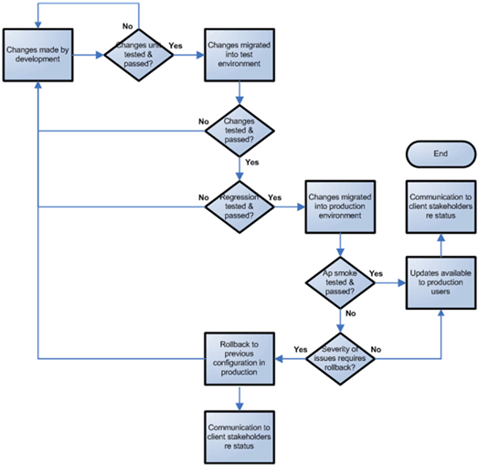
A “smoke test” following migration of changes into the production environment is done to verify several key success elements for the release:
A smoke test is a “spot check” of new configuration and of unchanged elements in the application after changes have been made to the production environment. It is unrealistic to expect that this test will be of the same scope as what was executed in preparation for the release. It is also not possible to test each function in the production environment. A post-implementation smoke test should not be considered a replacement for the thorough testing which is prerequisite to every release.
Smoke test scenarios are created by selecting key functions in the application that have been added or changed as well as those that have not been touched. Each Siebel implementation contains certain functionality and information that is critical to the customer’s business processes. Creating test scenarios to verify that at least some of those mission critical functions in the Siebel solution are working as expected is prudent, regardless of whether changes were made to the configuration that supports those processes. Other candidates for inclusion in the smoke test effort are functions or data for which this release is correcting a defect.
If the implementation includes mobile users, dedicated client users, and/or wireless clients, there will need to be test scenarios specific to those types of client applications. Many of the test scenarios executed for the Siebel Web Client can also be repeated with the Siebel Mobile Client and/or Siebel Dedicated Client for additional validation and to prove that the application is working as expected across all client types.
This document defines key information and documented process for migrating updates to the production environment. These releases may be maintenance or sustain releases which include small enhancements and/or changes to resolve defects in the production configuration or may be a release that consists of new functionality for the current Siebel version that has been installed in the production environment. Version upgrades of Siebel and/or RDBMS are out of scope of the release process described in this document.
The installation steps indicated in this document are created to ensure that production releases follow a consistent, reliable process, and that a plan for testing the changes in the production environment exists. This document contains information that is commonly required before the customer production release management team will approve a change to a production application. Much of the content in this document will be the same for subsequent releases in the customer’s environment. After customizing the template as needed, the completed document can be reused as a template for deployment planning and delivery.
This template contains places to record the following information:
Implementation team, customer stakeholders, and release managers for Siebel eBusiness Applications.
The following templates and tools specific for Siebel implementations are available to assist with this task:
Template File Name |
Comments |
|---|---|
| MS WORD |
Unit testing insures that a component within a module functions according to program specifications. Each component of a module should have its own test plan, separated by test objectives. These objectives should cover normal processing, error handling, and abnormal processing. A module component can also include an interface. Each interface between modules should also be unit tested, treating the areas beyond the exit and entry points of the interface as black boxes. Interface unit testing should verify that the inputs and outputs are in the accepted formats. Integration testing will verify each interface’s results from start to finish between modules.
This activity will focus on only the changes/modifications from Vanilla Siebel. Vanilla Siebel areas that are unmodified are outside the scope of Siebel Unit Testing. Each Siebel developer will be responsible for both the planning and execution of entities/tabs/views they develop. Unit Testing will comprise of two general areas:
Each developer should first create a Unit Test Plan based on a standard checklist. The purpose of standard checklist is to cover the test areas shared by all applets, views, and screens. This checklist is preferred over listing every little detail to be verified for every applet, view, and screen. The latter approach would be an excessive task that would only jeopardize timely completion of a fully developed and unit tested application ready for system test.
The following high-level steps should be performed in this unit test process:
The following form represents the standard checklist to be followed by each developer. This form should be completed and initialed for each applet, view, and screen.
| Organization / System: | CRM Common Sales Platform Project | Date: | |||
| Applet: | Entity: | ||||
| Title: | Siebel Applet Standard Test Verification | ||||
| Number | Functionality / Behavior | Verified (Initialed) |
| All Applets | ||
| A1. | Applet title displayed in upper left corner of applet? | |
| A2. | Field display names consistent with design specification? Display names should capitalize the first letter of each word? | |
| A3. | Dropdown pick list arrow displayed and accesses appropriate pick applet? | |
| A4. | All editable number/integer fields have a dropdown calculator available? Non-editable number/integer fields do not have a dropdown calculator? | |
| A5. | All editable date fields have a calendar popup? Non-editable date fields do not have a calendar popup? | |
| A6. | All currency fields display the appropriate default currency symbol? Dropdown on currency field displays appropriate currency popup whether or not the field is editable? Currency popup provides ability to change the currency type if the currency field is editable? | |
| A7. | All fields that typically store more information than they display should have a detail popup (…) button? This should include both editable and non-editable fields. | |
| A8. | All Boolean (tick) fields should use a centered tick and not simply Y or N? | |
| A9. | All phone and fax fields allow proper entry and formatting of international and domestic phone numbers? | |
| A10. | If design specifications indicate that Inserts are allowed for this applet, verify that a new record can be successfully created? If Inserts are not allowed as noted in the design specifications, verify that you cannot create a new record in the applet? This action should be performed both locally and connected to the server. | |
| A11. | After creating a new record, make sure the record remains visible in the view on which it was created after leaving and returning to that view? | |
| A12. | If design specifications indicate that Deletes are allowed for this applet, verify that a record can be successfully deleted? If Deletes are not allowed as noted in the design specifications, verify that you cannot delete a record in the applet? This action should be performed both locally and connected to the server. | |
| A13. | When you delete a record, verify what should happen to the child records? Are they deleted? Are they not deleted? If they are not deleted, are they still accessible / viewable elsewhere in the application. If the child records of a deleted parent record should be deleted, verify they are actually deleted from the database and not simply no longer visible? | |
| A14. | If design specifications indicate that Updates are allowed for this applet, verify that an existing record can be updated? If Updates are not allowed as noted in the design specifications, verify that you cannot update any field in the applet? This action should be performed both locally and connected to the server. | |
| A15. | All fields that are specified as read only in the design specification cannot be updated for both new and existing records. All fields that are not read only as indicated in the design specifications can be modified. | |
| List Applets | ||
| A16. | Default order of columns matches design specifications? | |
| A17. | Default spacing/size of columns is reasonable for the data it represents. | |
| A18. | All date and alphanumeric fields, including alphanumeric fields that store principally numeric values should be left justified? All currency and numeric fields should be right justified? | |
| A19. | Data sorted appropriately as specified and verified in the business component sort specification? Default/predefined queries? | |
| A20. | Drilldowns / Threads: All hyperlinks/drilldowns are available and navigate to the appropriate view? Default drilldown on the far left of the list applet navigates to the appropriate view? Thread bar functionality works properly (e.g., navigates back to the original view) when used in conjunction with drilldown functionality? | |
| A21. | Verify if an alpha tab is or is not present in accordance with the design specifications? Alpha tab (if available) functions properly and is associated with the appropriate field? | |
| Form Applets | ||
| A22. | New, Delete, Copy, and Cancel buttons are present on the applet only if these actions are allowed? Read only form applets should not have these buttons present? If you can create, delete, and/or copy records in this form applet, then the New, Delete, and Copy buttons should be present on the applet? | |
| A23. | Verify visual presentation of applet in 800 x 600 resolution. No text is cut off or missing? | |
| A24. | Verify visual presentation of applet in 1024 x 768 resolution. No text is cut off or missing? | |
| A25. | All text boxes and controls are aligned horizontally? Aligned vertically? Spaced equally? | |
| A26. | All fields, including currency and numeric fields should be left justified? | |
| A27. | All tab orders are correct. | |
| Chart Applets | ||
| A28. | Verify that the Chart Axes are correctly labeled, and that they reflect the design. | |
| A29. | Verify that the Chart Views can be expanded where applicable. | |
| A30. | Verify that the drop-down menus are correctly set up, are active, and have a complete set of values as per the design. | |
| A31. | Verify the visual layout of the individual charts on each applet. | |
| A32. | Verify that by double-clicking on an individual component of a chart, it behaves as if a query is being done on that specific component. | |
| A33. | Verify that the axis value can be changed where appropriate, and that the corresponding view is presented. |
| Organization / System: | CRM Common Sales Platform Project | Date: | |||
| Applet: | Entity: | ||||
| Title: | Siebel Applet Standard Test Verification | ||||
| Number | Functionality / Behavior | Verified (Initialed) |
| V1. | The view name in the navigation bar is present and matches design specifications? | |
| V2. | The view name is in the screen menu and matches design specifications and match the view name in the navigation bar? | |
| V3. | The view name is in the screen menu and matches design specifications and match the view name in the navigation bar? | |
| V4. | The view name in the title bar is present and matches design | |
| V5. | The view is appropriately distributed when viewed with eight sectors? | |
| V6. | The view is appropriately distributed when viewed with six sectors? |
The following templates and tools specific for Siebel implementations are available to assist with this task:
Template File Name |
Comments |
|---|---|
| MS WORD |
This task is very important since performance is key for the users of an application in terms of:
You should review the supplemental guide information for the task, RD.015, Determine KPI Collection and Reporting Strategy before accomplishing this task.
The following templates and tools specific for Siebel implementations are available to assist with this task:
Template File Name |
Comments |
|---|---|
| MS WORD |
Performance Testing provides an assessment of whether or not an infrastructure will perform and scale to company requirements both initially and based on known parameters of future growth. This task requires an image of the full database and all interfaces into the Siebel application (i.e., CTI, Middleware, email, etc.). Testing results impact the entire life cycle of the application since they identify whether the application performs to the specifications and whether or not additional hardware is required to support scalability. Through performance testing, Implementers establish a benchmark of the infrastructure performance, and this benchmark helps to proactively identify performance issues as the Siebel solution is installed in the enterprise. Benchmarks continue throughout the implementation process as new functionality is added, to help determine the scalability of the system and to analyze the impact of different numbers of users. This testing rigor verifies that the system can meet the current and future requirements of the enterprise.
The Performance Testing effort is an integral part of the validation process that begins when configuration of the Siebel application initiates and continues through deployment. Once the full range of functional testing is complete, a rigorous Performance Testing effort using system tools should be completed. Performance testing provides an assessment of whether or not the technology infrastructure will perform and scale, as required, in a deployed environment.
The use of automated tools is recommended to support conducting the three types of Load & Performance testing.
The first step in this process is to establish a benchmark of performance through the completion of a performance test. Next, it is recommended that a capacity test be completed adding users until reaching the number of users expected to use the system over the life of the application. Finally, a longevity test should be performed over an extended period of time to determine durability of an application as well as capture any defects that become visible over time.
In addition, a Performance Tuning Audit may be appropriate to ensure optimal performance across the Siebel enterprise architecture environment. During this review, Expert Services (ACS: Advanced Customer Services) will proactively identify any performance issues, thus reducing the risks of issues at runtime and increasing confidence as the implementation goes live.
This task requires the key participation of Siebel Expert Services group (ACS: Advanced Customer Services), so, some expert services should be involved in this workshop.
There are several aspects of developing an integration architecture that should be considered as you work through the integration strategy process. The first component is defining a data strategy. The areas of consideration are the requirements for data ownership, integration constraints, and data entry points to create a customized data strategy solution.
In addition to defining the data strategy, it is important to do a full analysis of integration requirements to identify the impact on front end and back end systems. The data strategy and integration requirements will be direct inputs into the development of the Integration Strategy, which defines the architecture and technology for the transfer and flow of data between impacted systems.
The purpose of this task is to build a consensus agreement on how the integration needs of the business should be addressed for a particular system. Each system that is under consideration for integration to the Siebel solution should be reviewed by subject matter experts from the customer's IT organization as well as the integration and technical architects from the project team.
The following templates and tools specific for Siebel implementations are available to assist with this task:
Template File Name |
Comments |
|---|---|
| MS WORD |
The work product also should describe the requirements for accessing existing data via the new system. The data to be made available is identified and the integrity of the data is examined. Requirements include:
Data from legacy systems is often needed in the new Siebel system for reference or for ongoing operation. Some data will be converted; that is, it will be moved from another system into the Siebel database, which will become the system of ownership and management for that data. Other data will continue to be managed and owned by other systems, but will be regularly synchronized with the Siebel database through an interface.
A design specification for each of these conversion components necessary to support the transfer of data from the legacy system(s) should include the following, as appropriate:
To create an optimized plan to facilitate a smooth data conversion, the following steps should be taken into account:
Manual procedures required to prepare existing data for conversion to the new system. The procedures cover preparatory work required to capture or transform data, and correct or prevent integrity problems.
A description of the data to be converted to the new system, through an automated process, and process specifications for the software required. The following are included:
There are two items that must be completed before initiating this task. These items are:
The following templates and tools specific for Siebel implementations are available to assist with this task:
Template File Name |
Comments |
|---|---|
| MS WORD |
To accomplish these activities refer to the Siebel Deployment Planning Guide and the Siebel Global Deployment Guide.

Copyright © 2006, 2016, Oracle and/or its affiliates. All rights reserved.